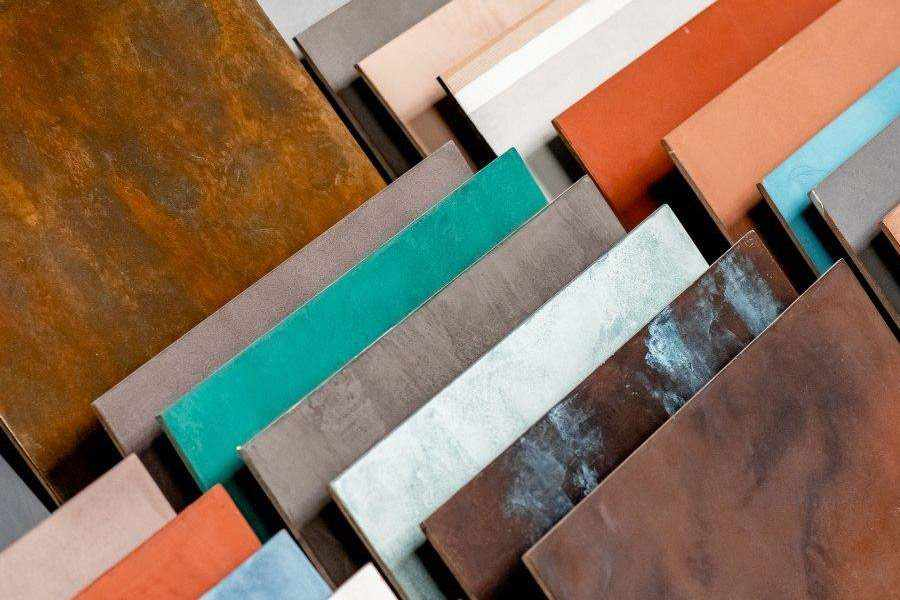

Cosa è il microcemento?
Il microcemento Topciment è un rivestimento decorativo composto da cemento, resine a base acquosa, additivi e pigmenti minerali.
Si tratta di un materiale ideale sia per esterni che per interni; applicabile su pavimenti, pareti e soffitti... Inoltre non richiede fughe! In questo modo, la pulizia e la manutenzione risultano più facili.
Topciment ti offre una vasta gamma di possibilità e finiture, in cui i limiti li definisci tu. Conferisci ai tuoi ambienti un carattere unico e personale, grazie alle diverse texture (grossa, media o fina), l’ampia varietà di colori, le diverse finiture di vernici (opache, satinate o lucide) o le vernici e le velature dagli effetti metallizzati. La loro applicazione artigianale rende il risultato di ogni lavoro ancora più unico ed esclusivo... Irripetibile: perché non troverai mai una superficie uguale all’altra.

Immagina e innova… Qualsiasi combinazione è possibile con Topciment!
Conferisci lo stile che desideri:moderno, classico o rustico.
A te il piacere di scegliere in base ai tuoi gusti, a noi quello di consigliarti e aiutarti.